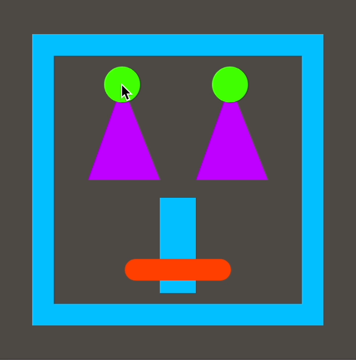

TBD.
In this lesson, you'll learn to draw rectangles, triangles, and lines, and you'll also learn how to change those shapes with your mouse or trackpad. You can make some pretty funny faces. 😊

Tinker
Click ▶Play. You'll see two rectangles.
They're created by the rect command.
Try these challenges:
Find the first rect command.
Change each number in it one number at a time, and click ▶Play after each change.
What does each number do?
Make the green rectangle appear higher than the pink rectangle
by changing the numbers inside the two rect commands.
Don't change the size of the rectangles, only their positions on screen.
Change the green rect command again
so that this rectangle is smaller and appears inside the pink rectangle.